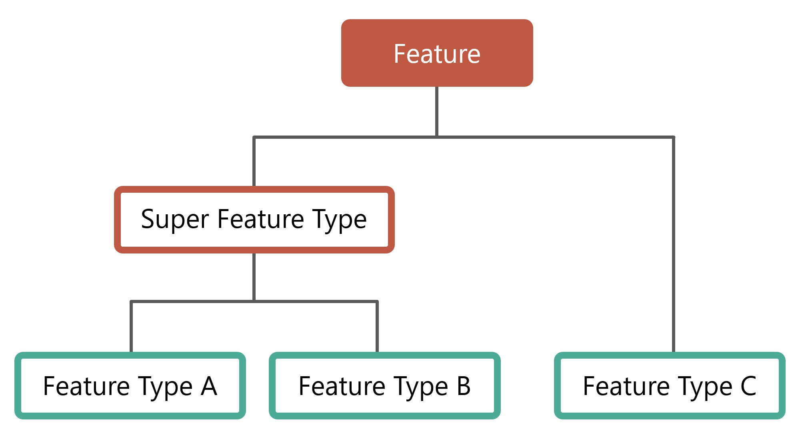
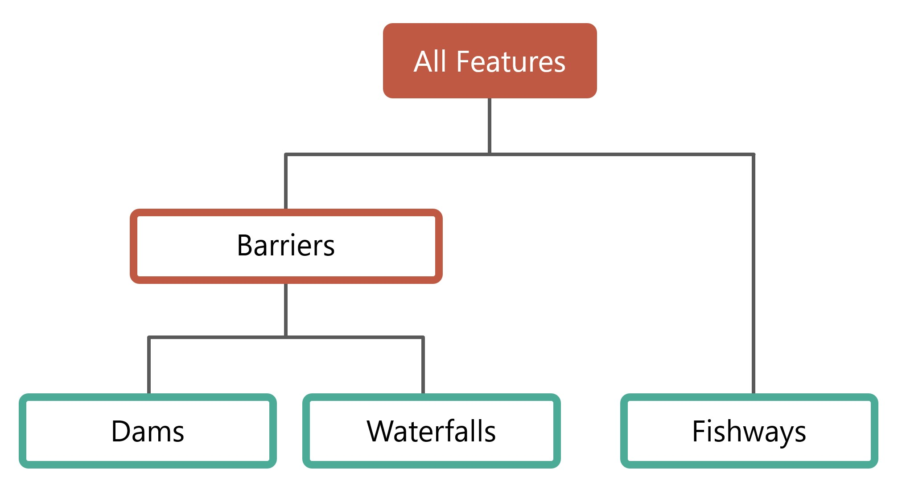

Application Architecture
Document Contents
Application Architecture#
This section contains technical details about the current implementation of the Canadian Aquatic Barriers Database (CABD) back-end application, including feaure and vector tile services and the CABD data dictionary. The intended audience are software developers and similar technical users looking to upgrade/maintain the current system or use the API endpoints.
Existing Implementation#
The current application runs on two Microsoft Azure Java Web App servers, cabd-web (for CABD data) and chyf-web (for CHyF data).
Features and Database Models#
CABD Feature Model#
Generic Feature Model#
Features in CABD have an optional hierarchical structure. Feature types can be combined to form “super feature types”.
There are no structures in the software/database that enforce this model. The database views (see section below) are used to define the various feature types and super types. It would be possible for a feature type to be associated with multiple super types, if desired.
{kind=link}
Implemented Feature Model#
There are currently three feature types and one super type implemented in CABD. Adding additional feature types is expected and the instructions for this are outlined below (How to add new Feature Type).
{kind=link}
Feature types:
barriers- a super feature type that includes dams, other structures, and waterfalls.dams- a feature type for features classified as a dam or other structure.waterfalls- a feature type for features classified as a waterfall.fishways- a feature type for features classified as a fish passage structure.medium- a feature type created for testing the increase in data volume expected for stream crossing data.big- a feature type created for testing the increase in data volume expected for stream crossing data.
CABD Database Model#
The database is structured into multiple schemas. Each feature type has its own schema, with a common cabd schema for shared data and feature metadata.
Feature Views#
Each feature type and super feature type has two associated views which support the API - one view for Engligh (_en) and one view for French (_fr). These views should include all fields required for output (either for display on the UI or to support the future editing API).
The view cabd.all_features_view_<en/fr> supports all feature api endpoints.
Views are used to support the CABD APIs that list features. Each feature type is linked to a database view. When requesting features of a specific type the view associated with this type is queried. The fields returned by this view populate the attributes of the feature returned by the API. Feature type views will generally query a single data table (for example, the dams view queries the dams data table). Super feature types will generally query multiple data tables (for example, the barriers view queries both the dams data table and the waterfalls data table).
Feature Update View#
By design each feature includes an updates_pending attribute that is populated with true or false depending on if there are feature updates pending review in the system. This field is populated by the system using the cabd.updates_pending view. This view should return a single column, cabd_id, for each feature that has a review pending in the database.
Core Tables#
These tables are the core tables for the system and required regardless of the feature types loaded. They support the definition of feature types.
cabd.feature_types
Lists all the feature types supported by the system.
Column |
Description |
|---|---|
type |
Unique identifier for feature type. Required. |
data_view |
The root name of the data view supporting the feature type. This is the view name without the language suffix (ex. dams_view). Required. |
name_en |
The English human readable name for the feature type. Required. |
name_fr |
The English human readable name for the feature type. Required. |
attribute_source_table |
The data table containing the attribute data source information for the feature type. This is optional and can be null. |
default_featurename_field |
The field in the data_view that represents the main feature name. |
feature_source_table |
The data table containing a link between the features and the data source information. This is optional and can be null. |
data_version |
The version number of the data for the feature type. This version number is included in exports. |
cabd.feature_type_metadata
Lists all the attributes for a given feature view and the metadata details about the attribute.
Column |
Description |
|---|---|
view_name |
The data view name. |
field_name |
The field name in the data view that represents this attribute. |
name_en |
The English name of the attribute. |
name_fr |
The French name of the attribute. |
description_en |
An English description of the attribute. |
description_fr |
A French description of the attribute. |
is_link |
Boolean. If true this attribute will be treated as a URL in the API. The value will be returned in URL format (For example: link to another feature). |
data_type |
The data type for the attribute. Valid values: varchar(xxx), text, boolean, array(type), integer, double, uuid, date, geometry. |
vw_simple_order |
Metadata for the UI. The UI supports a simple and all attribute view. This field represents the order the attribute should appear in the simple ui view. The value should be null for attributes that should not appear in the simple view. |
vw_all_order |
Metadata for the UI. The UI supports a simple and all attribute view. This field represents the order the attribute should appear in the all attribute view. Should be null for attributes that should not appear in the view. |
include_vector_tile |
Boolean. If true this attribute will be included in the vector tile service. |
value_options_reference |
For columns that have a defined list of valid values in another database table (for example: The string should be of the form For example: |
is_name_search |
True if field to be included in the name API search. Should be set to true fo any attributes that represent the feature name or want to include when searching by name. |
cabd.data_source
Lists data sources. Supports data source tracking for feature type attributes.
Column |
Description |
|---|---|
id |
A unique identifier for the data source. |
name |
Name of the data source (matches short names listed on the data sources page). |
version_date |
Data source version date. |
version_number |
Data source version number (optional). |
source |
A link to the source data or full reference and description of where the source data came from. |
comments |
Any additional comments about the data source. |
source_type |
Type of data source (spatial or non-spatial). |
A list of contacts relevant to the CABD database. Currently, contacts are only created when a user submits a feature update.
Column |
Description |
|---|---|
id |
unique system generated number |
Users email |
|
name |
Users name |
organization |
(Optional) Organization associated with the user |
datasource_id |
(Optional) Link to the cabd.data_source table which represents the datasource associated with this user. |
cabd.user_feature_updates
Users can use the Features API to submit updates to features. All submissions are stored in this table.
Column |
Description |
|---|---|
id |
unique system generated identifier |
datetime |
Date time of submission |
contact_id |
Link to the contact who submitted the change |
cabd_id |
Link to the feature the update references |
cabd_type |
CABD feature type |
user_description |
The user provided description of the update |
user_data_source |
The user provided data source |
status |
Internal field representing the status of the update. This is managed by the CABD administrators. |
Shared Attribute Tables#
All of these tables store data that are shared between multiple feature types. Generally, each of these tables have a unique code (for references), a name, and a description.
cabd.barrier_ownership_type_codescabd.fish_speciescabd.nhn_workunitcabd.passability_status_codescabd.province_territory_codescabd.upstream_passage_type_codescabd.census_subdivisions
Feature Tables#
The feature type data tables are found in their corresponding schema. Generally, there will be one feature data table and a number of reference tables that represent attribute values. Details for current feature types can be found in the Data Dictionary document.
Feature Type Attribute Data Sources#
The CABD database has the option of storing the data source for each attribute associated with the feature type. This has been implemented by having <featuretype>.<featuretype>_feature_source and <featuretype>.<featuretype>_attribute_source tables for the feature type (e.g., dams.dams_feature_source and dams.dams_attribute_source).
For each cabd feature, the <featuretype>_feature_source table contains a link to the data sources and associated data source feature ids that the feature was found in. For example, a dam feature that was found in both the nrcan_canvec_mm and bceccs_fiss data sources would have two entries for its cabd_id in the <featuretype>_feature_source table.
<featuretype>_feature_source
Column |
Description |
|---|---|
cabd_id |
The unique cabd feature identifier. This id must exist in the corresponding data table for the feature type. |
datasource_id |
A link to the data source id in the cabd.data_source table |
datasource_feature_id |
The identifier of the feature in the data source. |
The <featuretype>_attribute_source table contains the cabd_id and one column for each attribute that requires data source tracking. The column, <attribute>_ds, links to the cabd.data_source table to identify the data source for the attribute value.
<featuretype>_attribute_source
Column |
Description |
|---|---|
cabd_id |
The unique cabd feature identifier. This id must exist in the corresponding data table for the feature type. |
<attribute1>_ds |
A link to the data source id in the cabd.data_source table that <attribute1> comes from for the feature. |
<attribute2>_ds |
A link to the data source id in the cabd.data_source table that <attribute2> comes from for the feature. |
Audit Log / Change Tracking#
The CABD database has tracks changes to the following tables:
cabd.contacts
cabd.fish_species
cabd.data_source
dams.dams
dams.dams_attribute_source
dams.dams_feature_source
waterfalls.waterfalls
waterfalls.waterfalls_attribute_source
waterfalls.waterfalls_feature_source
fishways.fishways
fishways.fishways_attribute_source
fishways.fishways_feature_source
fishways.species_mapping
New feature types can also include change tracking by applying the appropriate triggers to any new database tables that require change tracking.
All changes are logged in the cabd.audit_log table. This table has the following columns: